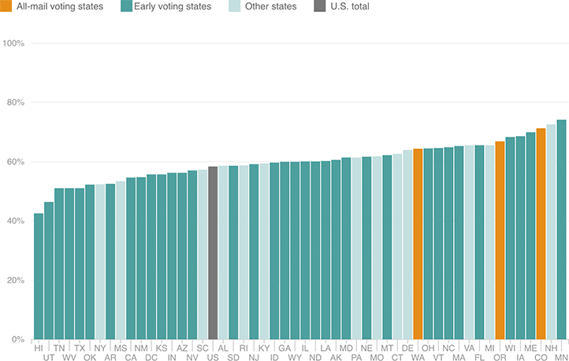

Vote-By-Mail States Had Relatively High Turnout
There’s no clear trend between states with some form of early voting and turnout levels. However, in the three states that conduct their voting by mail, turnout was higher.
Mail-in voting states
Early voting states
Other states
U.S. total
